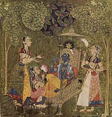

Krişna
Krişna yaygın Hint geleneğine göre Vişnu'nun sekizinci avatarıdır ve ona Vişnu'nun bir avatarı olarak tapılır. Çeşitli Vaişnava okullarında ise Yüce Tanrı yani en önemli ve yüksek tanrı olarak tapınılır. Gaudiya Vaişnavizm'de En üstün Kişilik yani Tanrı olarak görülmüş ve böylece onun diğer tüm enkarnasyonların, Vişnu dahil, temeli olduğuna inanılmıştırnı g. Genellikle flüt çalan bir sığır çobanı (örneğin Bhagavata Purana'da) ya da felsefî nasihatler veren genç bir prens (örneğin Bhagavad Gita'da) olarak betimlenir. Geleneksel olarak Krişna'nın Devaki'nin oğlu olduğuna inanılır ki Devaki bir iblisin çocuğu, kötü bir kral olan Kamsa'nın yarı kardeşidir. Kamsa kardeşinin çocuklarından birisinin kendisini öldüreceği haberine sahip olduğu için Devaki'nin birçok oğlunu öldürmüş, fakat sonunda Krişna tarafından öldürülmüştür.
Krişna sözcüğü Sanskritçede sözlüksel olarak "siyah" anlamına gelir. Betimlemelerde genellikle mavi veya koyu mavi renkli bir tenle tasvir edilen Krişna, murthiste ise daha çok koyu renkli veya siyahî olarak tasvir edilir. Krişna'nın yaşamına dair birçok hikâye vardır ve bunlar farklı Hindu öğretilerine göre çeşitlilik gösterir. Bununla birlikte genel olarak efsanelerde onun ilahî enkarnasyonuna, pastoral bir çocukluk ve gençlik dönemine, daha sonraları ise bir kahraman olarak yaşayışına değinilir, örneğin birçok canavarı yendiği öne sürülür.
Hinduizmin yanı sıra Jainizm, Budizm gibi dinlerde de Krişna'ya rastlanır. Bununla birlikte Krişna'nın rolü veya hikâyesi bu dinlerde değişiklik gösterir. Örneğin Budizmde Krişna'ya Jataka hikâyelerinde Sariputra'nın yaşamlarından biri, efsanevi bir fatih ve Hint kralı olarak yer alır. Ayrıca Krişna Bahai inancında Tanrı'nın bir tecellisi olarak anılır.
